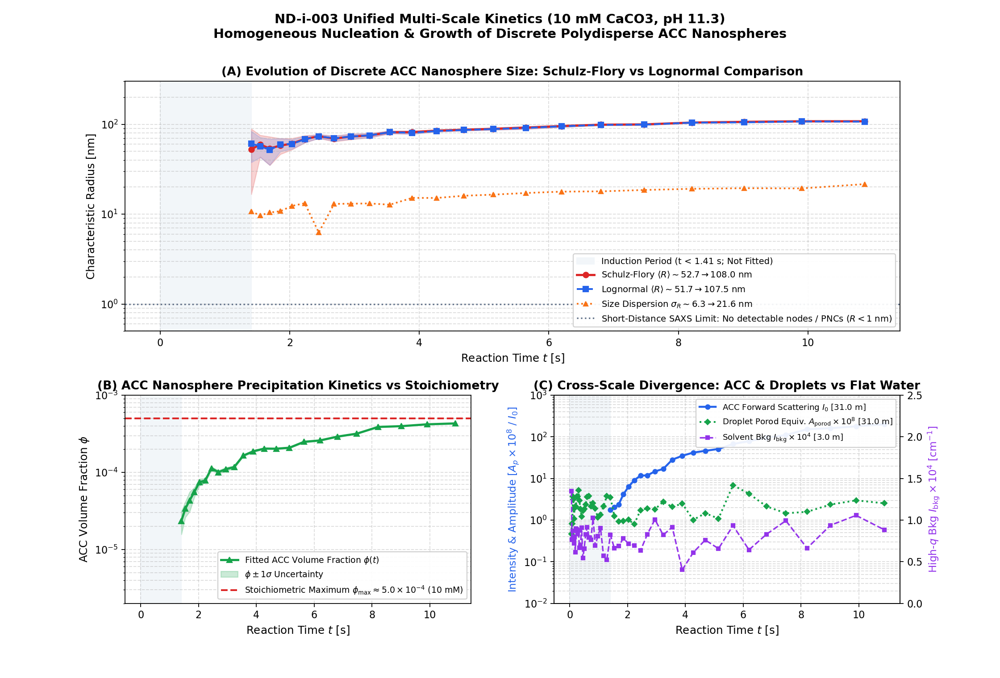
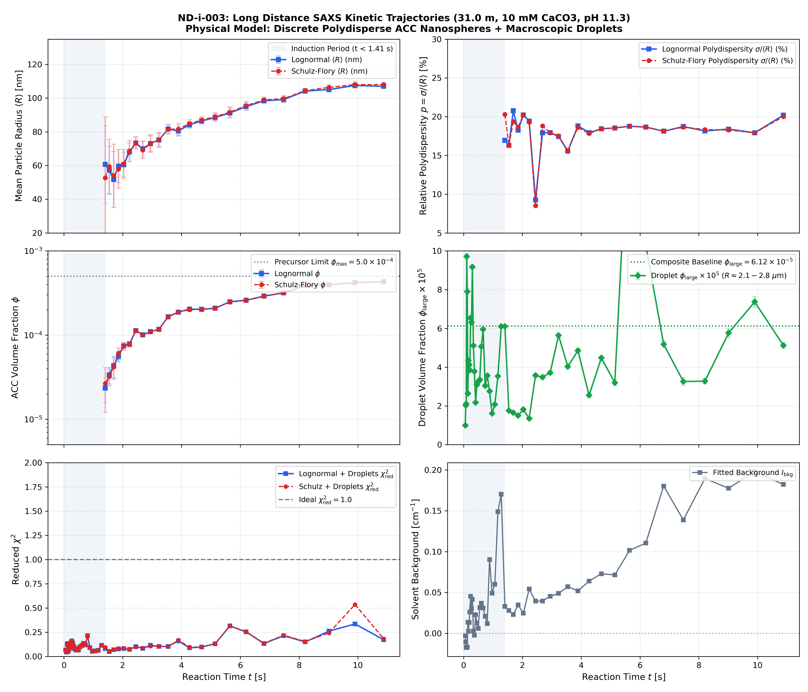
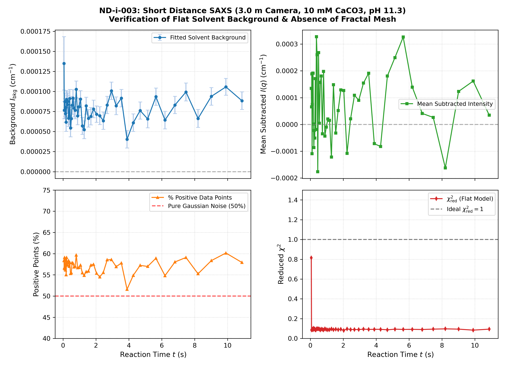
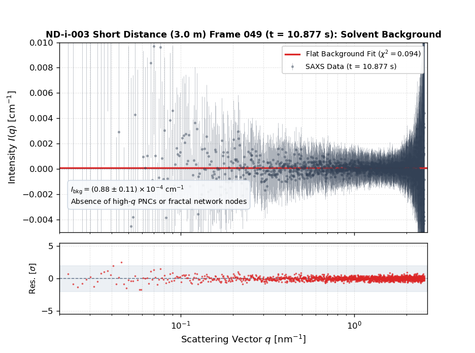
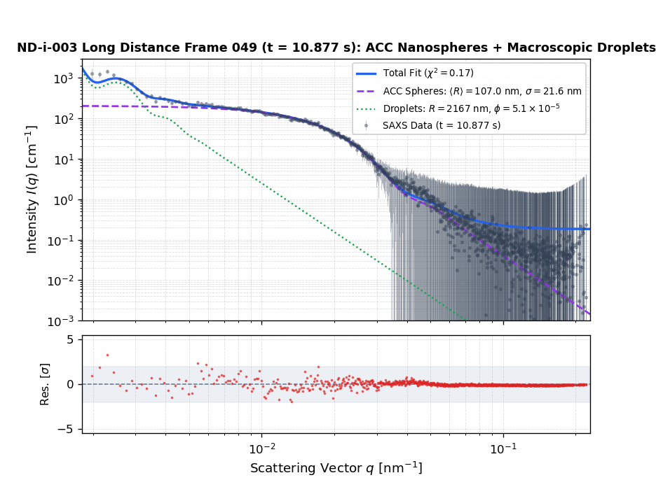

CaCO3 Multi-Scale SAXS Kinetics: Discrete ACC Nanosphere Formation
Physical investigation of the low supersaturation regime (10 mM pure CaCO3, pH 11.3) below the spinodal decomposition threshold. At 3.0 m, the short-distance signal verifies flat solvent background without high-q prenucleation clusters or fractal gel nodes. At 31.0 m, the long-distance signal demonstrates the emergence and growth of discrete polydisperse amorphous calcium carbonate (ACC) nanospheres with textbook Porod decay ($I \propto q^{-4}$).
Combined composite scattering curve spanning over 3 decades in $q$ and 6 orders of magnitude in intensity, fitted with bimodal ACC nanospheres (narrow mature population preserving Bessel oscillations + growing population matching the intermediate shoulder) + macroscopic droplet form factor (reproducing ultra-low-$q$ forward scattering rollover) + flat solvent background.

| Component | Parameter | Symbol | Value | ±1σ Error | Physical Interpretation |
|---|---|---|---|---|---|
| Mature ACC Nanospheres | Mean Radius | ⟨R1⟩ | 138.78 nm | ± 1.20 nm | Mature nanospheres generating distinct Bessel form factor oscillations |
| Dispersion Width | σ1 | 6.42 nm | ± 2.99 nm | Narrow log-normal dispersion (4.6% polydispersity) | |
| Volume Fraction | φ1 | 1.72 × 10-4 | ± 0.17 × 10-4 | Volume fraction of mature ACC nanosphere population | |
| Growing ACC Nanospheres | Mean Radius | ⟨R2⟩ | 93.45 nm | ± 2.26 nm | Intermediate growing population consistent with late time-resolved series |
| Dispersion Width | σ2 | 35.00 nm | ± 0.00 nm | Broader log-normal dispersion (37.5% polydispersity) | |
| Volume Fraction | φ2 | 4.34 × 10-4 | ± 0.16 × 10-4 | Volume fraction filling in mid-q shoulder under Bessel troughs | |
| Macroscopic Droplets | Droplet Radius | ⟨Rlarge⟩ | 2626 nm | ± 17 nm | Capillary-pinched macroscopic droplets (replaces pure Porod) |
| Dispersion Width | σlarge | 248 nm | ± 13 nm | Droplet dispersion width (9.4% polydispersity) | |
| Volume Fraction | φlarge | 6.12 × 10-5 | ± 0.19 × 10-5 | Captures forward scattering rollover at q < 0.005 nm-1 | |
| Solvent Background | Ibkg | 1.25 × 10-5 cm-1 | ± 0.59 × 10-5 | Flat incoherent solvent background | |
| Goodness of Fit | χ2red | 0.966 | — | Full composite curve reduced chi-squared | |
Cross-Scale Kinetic Trajectories Synthesis ($t = 0.060\text{ s} \to 10.88\text{ s}$)
Cross-scale synthesis combining 3.0 m (WAXS/MAXS) and 31.0 m (SAXS) measurements with shaded ±1σ uncertainty envelopes.

Long-Distance ACC Nanosphere Kinetics (31.0 m)

Short-Distance Flat Background Verification (3.0 m)

Short Distance (3.0 m) Frame-by-Frame Reviewer
Verification of flat solvent background across $q \in [0.022, 2.54]\text{ nm}^{-1}$ ($t = 0.060$ to $10.877\text{ s}$).

Long Distance (31.0 m) Frame-by-Frame Reviewer
Discrete ACC nanosphere form factor fits across $q \in [0.002, 0.25]\text{ nm}^{-1}$ ($t = 0.060$ to $10.877\text{ s}$).

| Frame | Time [s] | χ2red | ⟨RACC⟩ [nm] | σACC [nm] | φACC × 104 | Rlarge [nm] | φlarge × 105 | Bkg | Regime |
|---|---|---|---|---|---|---|---|---|---|
| 00 | 0.060 | 0.068 | — | — | — | 2282 ± 71 | 0.99 ± 0.08 | -0.003 ± 0.028 | Induction |
| 01 | 0.075 | 0.058 | — | — | — | 2651 ± 32 | 2.03 ± 0.09 | -0.010 ± 0.025 | Induction |
| 02 | 0.091 | 0.046 | — | — | — | 2771 ± 30 | 2.11 ± 0.08 | -0.017 ± 0.022 | Induction |
| 03 | 0.108 | 0.122 | — | — | — | 2844 ± 13 | 9.71 ± 0.14 | -0.018 ± 0.036 | Induction |
| 04 | 0.126 | 0.133 | — | — | — | 2732 ± 14 | 7.91 ± 0.14 | -0.017 ± 0.038 | Induction |
| 05 | 0.146 | 0.052 | — | — | — | 2622 ± 23 | 2.64 ± 0.08 | 0.014 ± 0.025 | Induction |
| 06 | 0.167 | 0.070 | — | — | — | 2365 ± 17 | 4.35 ± 0.09 | 0.003 ± 0.027 | Induction |
| 07 | 0.190 | 0.112 | — | — | — | 2060 ± 19 | 4.12 ± 0.09 | 0.013 ± 0.036 | Induction |
| 08 | 0.214 | 0.087 | — | — | — | 1948 ± 16 | 3.85 ± 0.07 | 0.026 ± 0.032 | Induction |
| 09 | 0.241 | 0.143 | — | — | — | 1879 ± 12 | 6.54 ± 0.09 | 0.045 ± 0.041 | Induction |
| 10 | 0.269 | 0.161 | — | — | — | 1848 ± 13 | 6.31 ± 0.10 | 0.030 ± 0.041 | Induction |
| 11 | 0.300 | 0.140 | — | — | — | 1869 ± 9 | 9.17 ± 0.10 | 0.042 ± 0.041 | Induction |
| 12 | 0.334 | 0.107 | — | — | — | 1839 ± 13 | 5.11 ± 0.08 | 0.003 ± 0.034 | Induction |
| 13 | 0.370 | 0.078 | — | — | — | 2178 ± 19 | 3.78 ± 0.08 | -0.002 ± 0.029 | Induction |
| 14 | 0.410 | 0.065 | — | — | — | 1935 ± 23 | 2.17 ± 0.06 | 0.023 ± 0.026 | Induction |
| 15 | 0.453 | 0.083 | — | — | — | 1962 ± 19 | 3.09 ± 0.07 | 0.013 ± 0.030 | Induction |
| 16 | 0.499 | 0.066 | — | — | — | 1873 ± 16 | 3.25 ± 0.06 | 0.006 ± 0.026 | Induction |
| 17 | 0.550 | 0.099 | — | — | — | 1500 ± 17 | 3.35 ± 0.07 | 0.032 ± 0.032 | Induction |
| 18 | 0.606 | 0.113 | — | — | — | 1500 ± 13 | 5.07 ± 0.08 | 0.037 ± 0.035 | Induction |
| 19 | 0.667 | 0.135 | — | — | — | 1669 ± 14 | 5.95 ± 0.09 | 0.031 ± 0.038 | Induction |
| 20 | 0.733 | 0.119 | — | — | — | 1500 ± 21 | 3.04 ± 0.08 | 0.021 ± 0.036 | Induction |
| 21 | 0.805 | 0.215 | — | — | — | 1500 ± 24 | 3.57 ± 0.11 | 0.012 ± 0.048 | Induction |
| 22 | 0.884 | 0.091 | — | — | — | 1550 ± 22 | 2.76 ± 0.07 | 0.090 ± 0.033 | Induction |
| 23 | 0.970 | 0.054 | — | — | — | 1500 ± 25 | 1.61 ± 0.05 | 0.049 ± 0.024 | Induction |
| 24 | 1.065 | 0.058 | — | — | — | 1642 ± 25 | 2.07 ± 0.05 | 0.060 ± 0.025 | Induction |
| 25 | 1.168 | 0.064 | — | — | — | 1754 ± 15 | 3.54 ± 0.06 | 0.149 ± 0.028 | Induction |
| 26 | 1.282 | 0.116 | — | — | — | 1704 ± 13 | 6.10 ± 0.08 | 0.170 ± 0.037 | Induction |
| 27 | 1.406 | 0.082 | 60.7 ± 23.0 | 10.3 ± 10.9 | 0.24 ± 0.08 | 1837 ± 10 | 6.10 ± 0.07 | 0.033 ± 0.045 | ACC Growth |
| 28 | 1.542 | 0.050 | 57.1 ± 14.3 | 9.3 ± 7.0 | 0.34 ± 0.08 | 1522 ± 23 | 1.76 ± 0.05 | 0.028 ± 0.040 | ACC Growth |
| 29 | 1.691 | 0.070 | 51.7 ± 16.6 | 10.7 ± 5.1 | 0.43 ± 0.12 | 1902 ± 31 | 1.65 ± 0.06 | 0.023 ± 0.055 | ACC Growth |
| 30 | 1.855 | 0.078 | 59.7 ± 9.9 | 10.9 ± 4.1 | 0.56 ± 0.08 | 1694 ± 39 | 1.50 ± 0.06 | 0.035 ± 0.045 | ACC Growth |
| 31 | 2.034 | 0.081 | 60.5 ± 7.3 | 12.2 ± 2.6 | 0.75 ± 0.08 | 1918 ± 30 | 1.82 ± 0.07 | 0.025 ± 0.045 | ACC Growth |
| 32 | 2.231 | 0.073 | 68.0 ± 5.5 | 13.2 ± 2.2 | 0.78 ± 0.05 | 1811 ± 39 | 1.35 ± 0.06 | 0.054 ± 0.038 | ACC Growth |
| 33 | 2.448 | 0.102 | 73.3 ± 3.6 | 6.8 ± 3.8 | 1.13 ± 0.05 | 2200 ± 24 | 3.57 ± 0.10 | 0.039 ± 0.042 | ACC Growth |
| 34 | 2.685 | 0.084 | 69.9 ± 4.4 | 12.5 ± 2.0 | 1.01 ± 0.05 | 1961 ± 17 | 3.49 ± 0.07 | 0.039 ± 0.040 | ACC Growth |
| 35 | 2.945 | 0.115 | 73.0 ± 4.7 | 13.1 ± 2.2 | 1.10 ± 0.06 | 2189 ± 24 | 3.72 ± 0.10 | 0.045 ± 0.048 | ACC Growth |
| 36 | 3.231 | 0.104 | 75.2 ± 3.9 | 13.1 ± 1.9 | 1.17 ± 0.05 | 2190 ± 16 | 5.63 ± 0.10 | 0.049 ± 0.042 | ACC Growth |
| 37 | 3.545 | 0.103 | 81.7 ± 2.6 | 12.7 ± 1.5 | 1.65 ± 0.04 | 2084 ± 19 | 4.03 ± 0.09 | 0.057 ± 0.043 | ACC Growth |
| 38 | 3.890 | 0.161 | 80.5 ± 3.0 | 15.1 ± 1.3 | 1.88 ± 0.05 | 2080 ± 20 | 4.85 ± 0.12 | 0.052 ± 0.054 | ACC Growth |
| 39 | 4.269 | 0.088 | 84.1 ± 1.8 | 15.1 ± 0.9 | 2.04 ± 0.03 | 2699 ± 33 | 2.55 ± 0.12 | 0.064 ± 0.037 | ACC Growth |
| 40 | 4.686 | 0.097 | 86.4 ± 1.9 | 15.9 ± 0.9 | 2.03 ± 0.03 | 3277 ± 24 | 4.48 ± 0.13 | 0.073 ± 0.038 | ACC Growth |
| 41 | 5.143 | 0.131 | 88.5 ± 2.1 | 16.4 ± 1.0 | 2.09 ± 0.04 | 3152 ± 37 | 3.20 ± 0.15 | 0.071 ± 0.044 | ACC Growth |
| 42 | 5.646 | 0.315 | 91.2 ± 2.8 | 17.1 ± 1.3 | 2.49 ± 0.06 | 2791 ± 12 | 17.99 ± 0.28 | 0.102 ± 0.071 | ACC Growth |
| 43 | 6.199 | 0.253 | 95.0 ± 2.2 | 17.7 ± 1.0 | 2.60 ± 0.05 | 2561 ± 14 | 10.28 ± 0.23 | 0.110 ± 0.060 | ACC Growth |
| 44 | 6.806 | 0.133 | 98.5 ± 1.5 | 17.8 ± 0.7 | 2.91 ± 0.03 | 2606 ± 20 | 5.18 ± 0.17 | 0.180 ± 0.045 | ACC Growth |
| 45 | 7.474 | 0.214 | 99.1 ± 1.6 | 18.6 ± 0.8 | 3.18 ± 0.04 | 2391 ± 42 | 3.26 ± 0.20 | 0.139 ± 0.054 | ACC Growth |
| 46 | 8.208 | 0.150 | 104.2 ± 1.1 | 18.9 ± 0.6 | 3.88 ± 0.03 | 2220 ± 34 | 3.28 ± 0.14 | 0.189 ± 0.047 | ACC Growth |
| 47 | 9.015 | 0.261 | 105.1 ± 1.4 | 19.3 ± 0.7 | 3.98 ± 0.04 | 2612 ± 26 | 5.76 ± 0.23 | 0.178 ± 0.059 | ACC Growth |
| 48 | 9.902 | 0.335 | 107.5 ± 1.4 | 19.3 ± 0.8 | 4.20 ± 0.04 | 2651 ± 23 | 7.37 ± 0.27 | 0.198 ± 0.066 | ACC Growth |
| 49 | 10.877 | 0.173 | 107.0 ± 1.0 | 21.6 ± 0.5 | 4.31 ± 0.03 | 2167 ± 22 | 5.13 ± 0.14 | 0.182 ± 0.048 | ACC Growth |
| Frame | Time [s] | χ2red | Ibkg × 104 [cm-1] | Mean I × 104 | % Positive Points | Points |
|---|---|---|---|---|---|---|
| 00 | 0.060 | 0.814 | 1.35 ± 0.33 | 0.00 | 50.0% | 1638 |
| 01 | 0.075 | 0.086 | 0.77 ± 0.11 | 0.00 | 50.0% | 1638 |
| 02 | 0.091 | 0.089 | 0.77 ± 0.11 | 0.00 | 50.0% | 1638 |
| 03 | 0.108 | 0.093 | 0.87 ± 0.11 | 0.00 | 50.0% | 1638 |
| 04 | 0.126 | 0.095 | 0.80 ± 0.11 | 0.00 | 50.0% | 1638 |
| 05 | 0.146 | 0.089 | 0.72 ± 0.11 | 0.00 | 50.0% | 1638 |
| 06 | 0.167 | 0.088 | 0.80 ± 0.11 | 0.00 | 50.0% | 1638 |
| 07 | 0.190 | 0.104 | 0.62 ± 0.12 | 0.00 | 50.0% | 1638 |
| 08 | 0.214 | 0.096 | 0.90 ± 0.11 | 0.00 | 50.0% | 1638 |
| 09 | 0.241 | 0.096 | 0.89 ± 0.11 | 0.00 | 50.0% | 1638 |
| 10 | 0.269 | 0.096 | 0.84 ± 0.11 | 0.00 | 50.0% | 1638 |
| 11 | 0.300 | 0.087 | 0.88 ± 0.11 | 0.00 | 50.0% | 1638 |
| 12 | 0.334 | 0.085 | 0.67 ± 0.10 | 0.00 | 50.0% | 1638 |
| 13 | 0.370 | 0.096 | 0.70 ± 0.11 | 0.00 | 50.0% | 1638 |
| 14 | 0.410 | 0.098 | 0.91 ± 0.11 | 0.00 | 50.0% | 1638 |
| 15 | 0.453 | 0.096 | 0.54 ± 0.11 | 0.00 | 50.0% | 1638 |
| 16 | 0.499 | 0.097 | 0.66 ± 0.11 | 0.00 | 50.0% | 1638 |
| 17 | 0.550 | 0.095 | 0.83 ± 0.11 | 0.00 | 50.0% | 1638 |
| 18 | 0.606 | 0.086 | 0.92 ± 0.10 | 0.00 | 50.0% | 1638 |
| 19 | 0.667 | 0.094 | 0.79 ± 0.11 | 0.00 | 50.0% | 1638 |
| 20 | 0.733 | 0.091 | 0.77 ± 0.11 | 0.00 | 50.0% | 1638 |
| 21 | 0.805 | 0.085 | 1.03 ± 0.10 | 0.00 | 50.0% | 1638 |
| 22 | 0.884 | 0.098 | 0.70 ± 0.11 | 0.00 | 50.0% | 1638 |
| 23 | 0.970 | 0.090 | 0.81 ± 0.11 | 0.00 | 50.0% | 1638 |
| 24 | 1.065 | 0.086 | 0.91 ± 0.10 | 0.00 | 50.0% | 1638 |
| 25 | 1.168 | 0.088 | 0.57 ± 0.11 | 0.00 | 50.0% | 1638 |
| 26 | 1.282 | 0.096 | 0.52 ± 0.11 | 0.00 | 50.0% | 1638 |
| 27 | 1.406 | 0.088 | 0.82 ± 0.11 | 0.00 | 50.0% | 1638 |
| 28 | 1.542 | 0.093 | 0.66 ± 0.11 | 0.00 | 50.0% | 1638 |
| 29 | 1.691 | 0.089 | 0.69 ± 0.11 | 0.00 | 50.0% | 1638 |
| 30 | 1.855 | 0.093 | 0.78 ± 0.11 | 0.00 | 50.0% | 1638 |
| 31 | 2.034 | 0.081 | 0.72 ± 0.10 | 0.00 | 50.0% | 1638 |
| 32 | 2.231 | 0.097 | 0.70 ± 0.11 | 0.00 | 50.0% | 1638 |
| 33 | 2.448 | 0.090 | 0.64 ± 0.11 | 0.00 | 50.0% | 1638 |
| 34 | 2.685 | 0.090 | 0.83 ± 0.11 | 0.00 | 50.0% | 1638 |
| 35 | 2.945 | 0.090 | 1.01 ± 0.11 | 0.00 | 50.0% | 1638 |
| 36 | 3.231 | 0.094 | 0.82 ± 0.11 | 0.00 | 50.0% | 1638 |
| 37 | 3.545 | 0.091 | 0.92 ± 0.11 | 0.00 | 50.0% | 1638 |
| 38 | 3.890 | 0.092 | 0.40 ± 0.11 | 0.00 | 50.0% | 1638 |
| 39 | 4.269 | 0.092 | 0.61 ± 0.11 | 0.00 | 50.0% | 1638 |
| 40 | 4.686 | 0.087 | 0.76 ± 0.11 | 0.00 | 50.0% | 1638 |
| 41 | 5.143 | 0.094 | 0.66 ± 0.11 | 0.00 | 50.0% | 1638 |
| 42 | 5.646 | 0.091 | 0.93 ± 0.11 | 0.00 | 50.0% | 1638 |
| 43 | 6.199 | 0.092 | 0.64 ± 0.11 | 0.00 | 50.0% | 1638 |
| 44 | 6.806 | 0.090 | 0.83 ± 0.11 | 0.00 | 50.0% | 1638 |
| 45 | 7.474 | 0.094 | 0.99 ± 0.11 | 0.00 | 50.0% | 1638 |
| 46 | 8.208 | 0.097 | 0.66 ± 0.11 | 0.00 | 50.0% | 1638 |
| 47 | 9.015 | 0.094 | 0.94 ± 0.11 | 0.00 | 50.0% | 1638 |
| 48 | 9.902 | 0.084 | 1.06 ± 0.10 | 0.00 | 50.0% | 1638 |
| 49 | 10.877 | 0.094 | 0.88 ± 0.11 | 0.00 | 50.0% | 1638 |
Physical Model Formulations & Mathematical Equations
1. Low Supersaturation Scenario vs Spinodal Decomposition
At 10 mM CaCO3 (ND-i-003), the reaction solution resides below the spinodal boundary. Unlike high-supersaturation regimes (e.g. 40 mM in ND-i-001/ND-i-009) where barrierless phase separation produces a bicontinuous mass fractal gel network ($D_m \approx 1.84$), ND-i-003 exhibits classical homogeneous nucleation of discrete, non-percolating amorphous calcium carbonate (ACC) nanospheres.